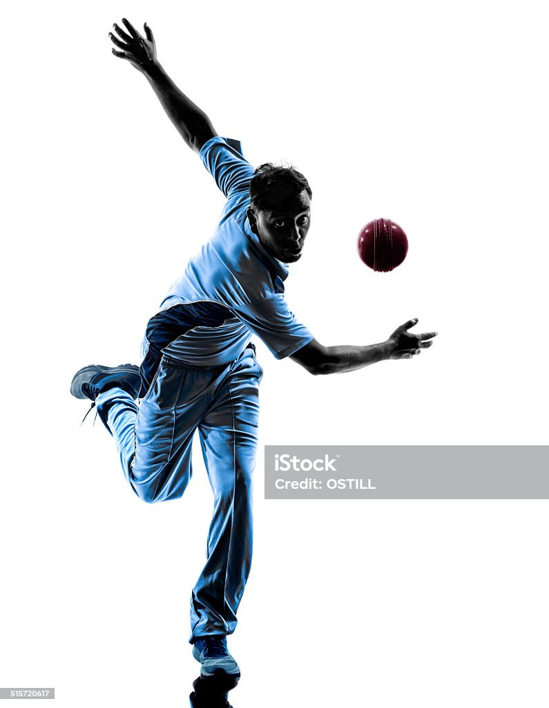

Cricket is my favorite game
Description :
Cricket is known to be a game played within the 22 yards of a field. But it is celebrated all around the world like a religion. Whenever a bat scores a 100 or a ball hits the wicket, it’s time for celebration. Cricket defines passion, it shows how countless dreams turn into reality! Given below are paragraphs to help us know more about the essence and evolution of this sport over the years.
Footbal
Description :
Football is a worldwide famous sport. There are several benefits of Football. The art of being fair, team-spirit, endeavor, and competitive spirit is developed by football. Football is considered as one of the disciplined sports among all sports. Various games like Rugby, Basketball is also very similar to football. The only difference is that football allows players to use the foot for kicking the ball.
Tennish

Description :
Tennis is a widely popular outdoor game which is being played in all regions of the world. Tennis was first played in the mid 19th century in Birmingham, England. Tennis has several variations in how it is played which include lawn tennis, table tennis, etc. Similar to cricket and soccer, tennis is a physically demanding sport.